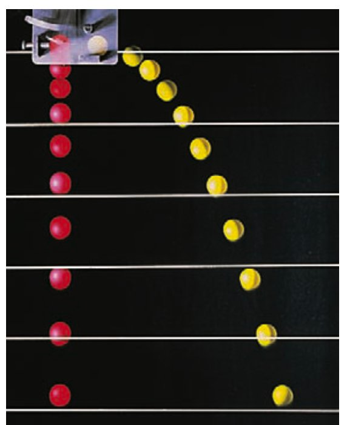
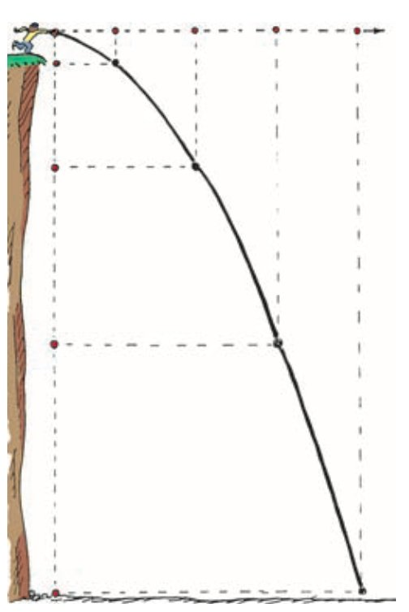
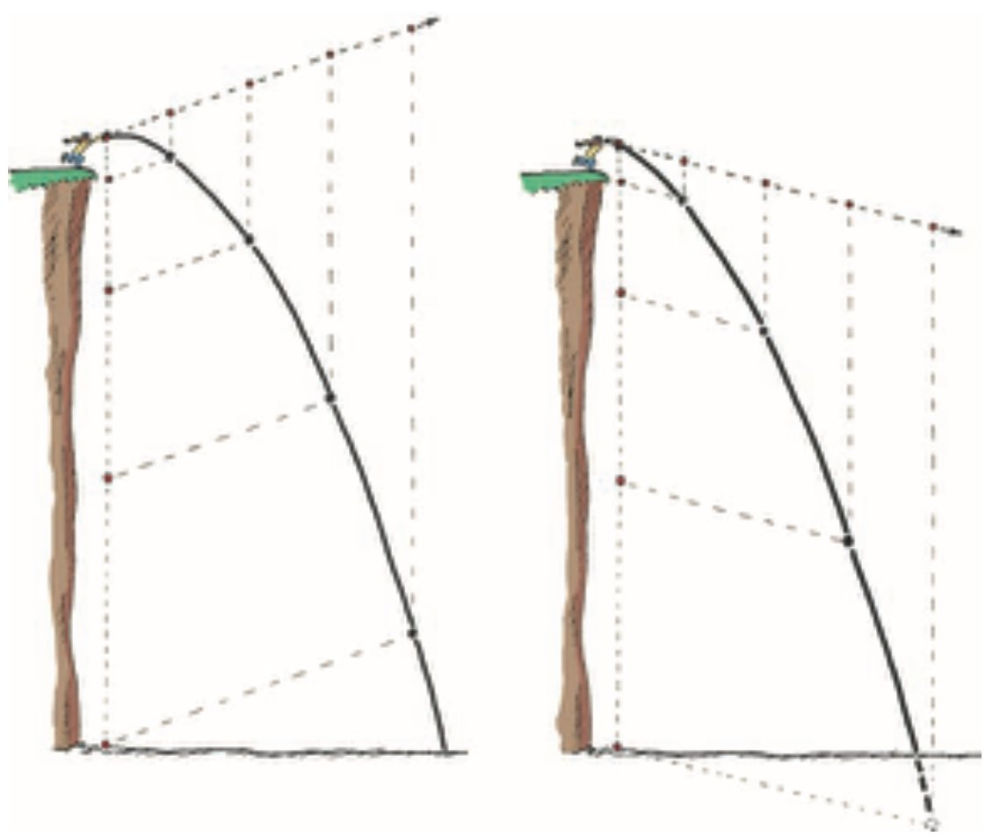
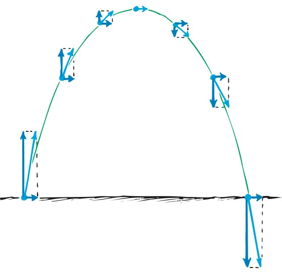
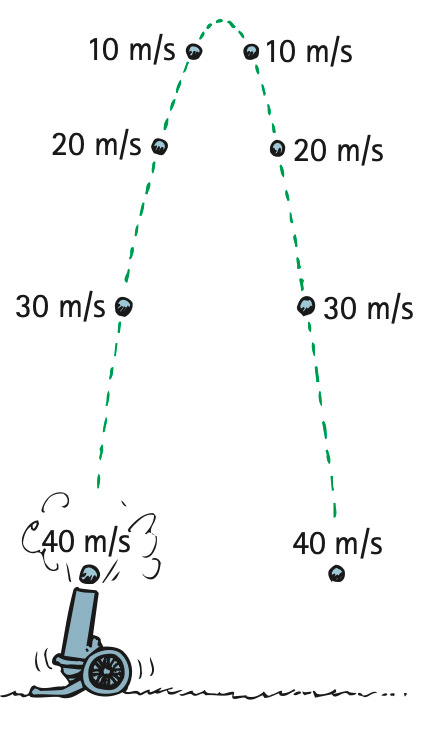

Projectile Motion
A teacher’s influence knows no bounds. Our influence on students goes beyond what feedback makes its way to us. When I’m asked which of my many students I take the most pride in, and whom I most influenced, my answer is quick: Tenny Lim. In addition to being bright, she is artistic and very dexterous with her hands. She was the top-scoring student in my Conceptual Physics class in 1980 and earned an AS degree in Dental Laboratory Technology. With my encouragement and support, she continued at City College with courses in math and science and decided to pursue an engineering career. Two years later, she transferred to California Polytechnic State University in San Luis Obispo. While earning her BS degree in mechanical engineering, a recruiter from the Jet Propulsion Laboratory (JPL) in Pasadena was impressed that she was also taking art classes to balance her technical studies. When asked about this, Tenny replied that art was one of her passions. What the recruiter was looking for was someone talented in both art and engineering for JPL’s design team. Tenny was hired in the space program and has worked on many space missions, most recently being lead designer for the descent stage that brought Curiosity to the surface of Mars in 2012.
Tenny’s current project is the Soil Moisture Active Passive (SMAP) mission, designing and building a satellite to measure and distinguish frozen soil moisture on Earth’s surfaces from thawed land surfaces. Signals to and from Earth via a 6-meter deployable mesh antenna (see photo) provide improved estimates of water, energy, and carbon transfers between land and atmosphere. Tenny is the lead mechanical designer on the instrument side of the satellite. She also continues with her art, much of which is shown in local galleries.
Tenny’s story exemplifies my advice to young people: Excel at more than one thing.
Chapter 10 opener photo was omitted because no matching captured image was supplied.
Projectile Motion
Without gravity, you could toss a rock skyward at an angle and it would follow a straight-line path. Because of gravity, however, the path curves. A tossed rock, a tennis ball, or any object that is projected by some means and continues in motion by its own inertia is called a projectile. To the cannoneers of earlier centuries, the curved paths of projectiles seemed very complex. Today these paths are surprisingly simple when we look at the horizontal and vertical components of velocity separately.
The horizontal component of velocity for a projectile is no more complicated than the horizontal velocity of a bowling ball rolling freely on the lane of a bowling alley. If the retarding effect of friction can be ignored, there is no horizontal force on the ball and its velocity is constant. It rolls of its own inertia and covers equal distances in equal intervals of time (Figure 10.1, left). The horizontal component of a projectile’s motion is just like the bowling ball’s motion along the lane.
The vertical component of motion for a projectile following a curved path is just like the motion described in Chapter 3 for a freely falling object. The vertical component is exactly the same as for an object falling freely straight down, as shown at the right in Figure 10.1. The faster the object falls, the greater the distance covered in each successive second. Or, if the object is projected upward, the vertical distances of travel decrease with time on the way up.


In Figure 10.2 (identical to the earlier Figure 5.27) we see the component vectors of a stone’s velocity. The horizontal component of velocity is completely independent of the vertical component of velocity when air resistance is small enough to ignore. The constant horizontal-velocity component is not affected by the vertical force of gravity. It is important to stress that each component is independent of the other. Their combined effects produce the trajectories of projectiles.
Projectiles Launched Horizontally
Projectile motion is nicely analyzed in Figure 10.3, which shows a simulated multiple-flash exposure of a ball rolling off the edge of a table. Investigate it carefully, for there’s a lot of good physics there. At the left we notice equally timed sequential positions of the ball’s horizontal component of motion without the effect of gravity. Next we see vertical motion without a horizontal component. The curved path in the third view is best analyzed by considering the horizontal and vertical components of motion separately. Notice two important things: The first is that the ball’s horizontal component of velocity doesn’t change as the falling ball moves forward. The ball travels the same horizontal distance in equal times between the flashes. That’s because there is no component of gravitational force acting horizontally. Gravity acts only downward, so the only acceleration of the ball is downward. The second thing to notice is that the vertical positions become farther apart with time. The vertical distances traveled are the same as if the ball were simply dropped. Notice that the curvature of the ball’s path is the combination of constant horizontal motion and accelerated vertical motion.

The trajectory of a projectile that accelerates in only the vertical direction while moving at a constant horizontal velocity is a parabola. When air resistance is small enough to ignore, as it is for a heavy object without great speed, the trajectory of the object is parabolic.

Figure 10.5 was omitted because no matching captured image was supplied. Textbook caption: Chuck Stone releases a ball near the top of a track. His students make measurements to predict where a can on the floor should be placed to catch the ball after it rolls off the table.


Projectiles Launched at an Angle
In Figure 10.7, we see the paths of stones thrown at an angle upward (left) and downward (right). The dashed straight lines show the ideal trajectories of the stones if there were no gravity. Notice that the vertical distance beneath the idealized straight-line paths is the same for equal times. This vertical distance is independent of what’s happening horizontally.
Figure 10.8 shows specific vertical distances for a cannonball shot at an upward angle. If there were no gravity, the cannonball would follow the straight-line path shown by the dashed line. But there is gravity, so this doesn’t occur. What really happens is that the cannonball falls continuously beneath the imaginary line until it finally strikes the ground. Note that the vertical distance it falls beneath any point on the dashed line is the same vertical distance it would fall if it were dropped from rest and had been falling for the same amount of time. This distance, as introduced in Chapter 3, is given by d = 1/2 gt2, where t is the elapsed time.
We can put it another way: Imagine launching a projectile skyward at some angle and there is no gravity. After so many seconds t, the projectile should be at a certain point along a straight-line path. But, because of gravity, it isn’t. Where is it? The answer is that it’s directly below this point. How far below? The answer in meters is 5t2 (or, more precisely, 4.9t2). How about that!

Practicing Physics: Hands-On Dangling Beads
Make your own model of projectile paths. Divide a ruler or a stick into five equal spaces. At position 1, hang a bead from a string 1 cm long, as shown. At position 2, hang a bead from a string 4 cm long. At position 3, do the same with a 9-cm length of string. At position 4, use 16 cm of string, and for position 5, use 25 cm of string. If you hold the stick horizontally, you will have a version of Figure 10.6. Hold it at a slight upward angle to show a version of Figure 10.7, left. And at a downward angle to show a version of Figure 10.7, right.
Practicing Physics dangling-beads illustration was omitted because no matching captured image was supplied.
Note another thing from Figure 10.8 and earlier figures. The ball moves the same horizontal distance in equal time intervals. That’s because no acceleration takes place horizontally. The only acceleration is vertical, in the direction of Earth’s gravity.
In Figure 10.9, we see vectors that represent both the horizontal and vertical components of velocity for a projectile following a parabolic trajectory. Notice that the horizontal component everywhere along the trajectory is the same, and only the vertical component changes. The actual velocity is represented by the vector that is the diagonal of the rectangle formed by the vector components. At the top of the trajectory, the vertical component is zero, so the velocity at the zenith is only the horizontal component of velocity. Everywhere else along the trajectory, the magnitude of the velocity is greater (just as the diagonal of a rectangle is longer than either of its sides).


Figure 10.10 shows the trajectory traced by a projectile that is launched with the same speed at a steeper angle. Notice that the initial velocity vector has a greater vertical component than when the launch angle is smaller. This greater component results in a trajectory that reaches a greater height. But the horizontal component is smaller, and the range is smaller.
Figure 10.11 shows the paths of several projectiles, all with the same initial speed but different launching angles. The figure ignores the effects of air drag, so the trajectories are all parabolas. Notice that these projectiles reach different altitudes, or heights, above the ground. They also have different horizontal ranges, or distances traveled horizontally. The remarkable thing to note from Figure 10.11 is that the same range is obtained from two different launching angles when their angles add up to 90°! An object thrown into the air at an angle of 60°, for example, has the same range as if it were thrown at the same speed at an angle of 30°. For the smaller angle, of course, the object remains in the air for a shorter time. The maximum range occurs when the launching angle is 45°—when air drag is negligible.

Figure 10.12 was omitted because no matching captured image was supplied. Textbook caption: The maximum range would be attained for a ball batted at an angle of 45°—but only in the absence of air drag.
If we ignore the effects of air drag, the maximum range for a baseball would occur when it is batted 45° above the horizontal. Without air drag, the ball rises just like it falls, covering the same amount of ground while rising as while falling. But not so when air drag slows the ball. Then its horizontal speed at the top of its path is less than its horizontal speed when leaving the bat, so it covers less ground while falling than while rising. As a result, for maximum range the ball must leave the bat with more horizontal speed than vertical speed—at about 25° to 34°, considerably less than 45°. Likewise for golf balls. (As Chapter 14 will show, the spin of the ball also affects range.) For heavy projectiles like javelins and the shot, air has less effect on range. A javelin, being heavy and presenting a very small cross section to the air, follows an almost perfect parabola when thrown. So does a shot. Aha, but launching speeds are not equal for heavy projectiles thrown at different angles. When a javelin or a shot is thrown, a significant part of the launching force goes into lifting—combating gravity—so launching at 45° means less launching speed. You can test this yourself: Throw a heavy boulder horizontally and then at an angle upward—you’ll find the horizontal throw to be considerably faster. So the maximum range for heavy projectiles thrown by humans is attained with angles smaller than 34°—and not because of air resistance.

When air resistance is small enough to be ignored, a projectile will rise to its maximum height in the same time it takes to fall from that height to its initial level (Figure 10.14). This is because its deceleration by gravity while going up is the same as its acceleration by gravity while coming down. The speed it loses while going up is therefore the same as the speed it gains while coming down. So the projectile arrives at its initial level with the same speed it had when it was initially projected.
Baseball games normally take place on level ground. For the short-range projectile motion on the playing field, Earth can be considered to be flat because the flight of the baseball is not affected by Earth’s curvature. For very long-range projectiles, however, the curvature of Earth’s surface must be taken into account. We’ll now see that if an object is projected fast enough, it will fall all the way around Earth and become an Earth satellite.


Hang Time Revisited
In Chapter 3, we stated that airborne time during a jump is independent of horizontal speed. Now we see why this is so—the horizontal and vertical components of motion are independent of each other. The rules of projectile motion apply to jumping. Once one’s feet are off the ground, only the force of gravity acts on the jumper (ignoring air resistance). Hang time depends on only the vertical component of liftoff velocity. It so happens, however, that the action of running can make a difference. If the ballplayer is running, the liftoff force during jumping can be appreciably increased by pounding the feet against the ground (and the ground pounding against the feet in action–reaction fashion), so hang time for a running jump can exceed hang time for a standing jump. But again for emphasis: Once the runner’s feet are off the ground, only the vertical component of liftoff velocity determines hang time.
Textbook Sections: 10.1
Learning Target: Students will model projectile motion by separating horizontal and vertical components of motion.
- I can define a projectile as an object moving under the influence of gravity after being launched.
- I can explain why horizontal motion remains constant when air resistance is ignored.
- I can explain why vertical motion accelerates downward due to gravity.
- I can describe projectile motion as the combination of horizontal constant velocity and vertical accelerated motion.
- I can critique projectile-motion explanations that confuse horizontal and vertical motion.